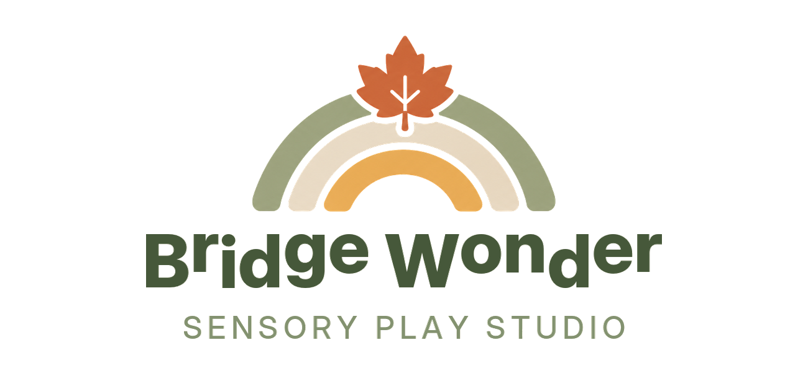

원장·선생님 전용
선생님 운영공간
BRIDGE WONDER · STAFF
운영 관리 로그인
등록된 업무용 이메일과 비밀번호로 로그인하세요.
처음 한 번 이메일을 인증한 후 비밀번호를 설정합니다. 계정별 접근 권한은 원장이 관리합니다.
안녕하세요.
계정 확인을 위해 이메일로 6자리 인증번호를 보내드립니다.
이메일 인증 및 비밀번호 설정
승인된 직원만 사용할 수 있습니다. 모든 정보는 업무 목적에 한해 조회하세요.
Google 서버 연결을 확인하는 중입니다. 로그인 화면은 먼저 사용할 수 있습니다.